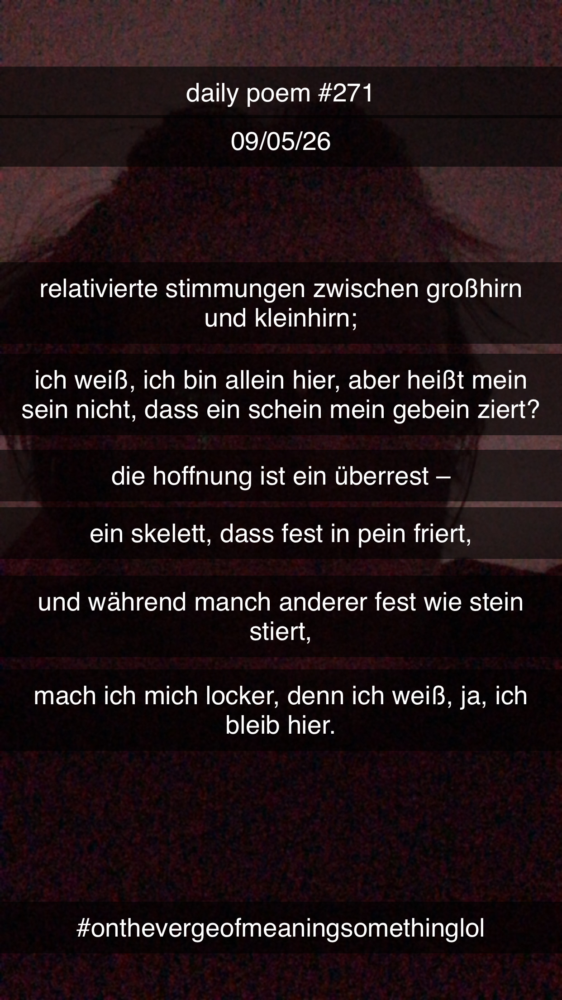

Komischer Freestyle oder so
[271]Relativierte Stimmungen
zwischen Großhirn
und Kleinhirn;
ich weiß, ich bin allein' hier,
aber heißt mein Sein
nicht, dass ein Schein mein Gebein ziert?
Die Hoffnung ist ein Überrest –
ein Skelett, das fest in Pein friert –
und während manch and'rer fest
wie Stein stiert,
mach' ich mich locker, denn
ich weiß,
ja, ich bleib' hier.
